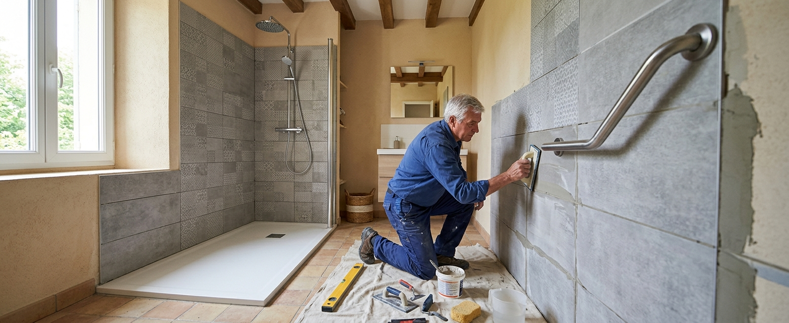

Le projet en bref
- ·Faisabilité : possible dans la plupart des salles de bains, dans l’emprise de la baignoire.
- ·Durée : 2 à 5 jours pour une transformation type avec panneaux muraux.
- ·Budget : 4 000 – 9 000 € posé (estimation nationale 2026).
- ·Aides : MaPrimeAdapt’ et autres dispositifs possibles, sous conditions et avant travaux.
- ·Prochaine étape : une visite technique pour vérifier drain, sol et murs.
Dans quels cas remplacer la baignoire ?
Le déclencheur le plus fréquent est l’enjambement : le rebord d’une baignoire se franchit de moins en moins volontiers, surtout sur sol humide. Mais le remplacement se décide aussi par préférence — beaucoup n’utilisent plus le bain depuis des années —, par anticipation lors d’une rénovation, pour se doucher assis, ou pour faciliter l’aide d’un proche. Une baignoire qui ne sert plus occupe simplement le meilleur emplacement de la pièce.
Si vous hésitez encore entre garder un bain accessible et passer à la douche, consultez notre comparatif baignoire à porte ou douche ; et pour définir le bon niveau d’adaptation, voyez Douche senior ou douche PMR.
Peut-on conserver le même emplacement ?
C’est presque toujours l’option la plus simple et la plus économique. L’emprise d’une baignoire standard (160 à 180 cm de long, 70 à 80 cm de large) offre l’espace d’une douche spacieuse, et les réseaux — évacuation et arrivées d’eau — sont déjà là. La visite technique vérifie quatre points :
- ·La position et le diamètre de l’évacuation — réutilisables tels quels dans la plupart des cas ; un receveur avec bonde décalée compense un drain mal placé.
- ·L’état du sol sous la baignoire — jamais visible avant dépose ; un plancher affaibli se reprend avant la pose du receveur.
- ·Le mur d’adossement — il recevra l’étanchéité, les panneaux et les renforts du siège et des barres.
- ·La porte et la circulation — l’ouverture de la paroi de douche ne doit gêner ni la porte ni le lavabo, et laisser un espace de transfert si besoin.
Quelle douche installer à la place ?
Côté murs, le choix panneaux ou carrelage pèse autant que le receveur : panneaux étanches posés en 1 à 2 jours, joints réduits, entretien simple — carrelage plus personnalisable mais plus long et plus exigeant en préparation. Les équipements (siège rabattable, barres sur renforts, douchette sur barre, mitigeur thermostatique, paroi adaptée à l’accès) se décident avant la pose des revêtements, pour intégrer les renforts.
Les étapes des travaux
- 1
Préparation du projet
Visite de la salle de bain, mesures, choix de la douche et des équipements, devis détaillé — et accords d’aides le cas échéant, avant tout démarrage.
- 2
Protection et dépose
Protection du chantier et des circulations, dépose de la baignoire et de son habillage, évacuation des gravats.
- 3
Contrôle du support et plomberie
Vérification du sol et des murs mis à nu, reprises si nécessaire, adaptation de l’évacuation et des arrivées d’eau à la nouvelle configuration.
- 4
Étanchéité et receveur
Système d’étanchéité sur les murs et au sol, pose et calage du receveur — l’étape qui conditionne la durabilité de tout le reste.
- 5
Revêtements et équipements
Panneaux ou carrelage, robinetterie, paroi, puis siège et barres sur leurs renforts.
- 6
Finitions, essais, remise en service
Joints, raccords, nettoyage du chantier, essais d’écoulement et d’étanchéité, prise en main avec vous. La douche est généralement utilisable après séchage des joints — le professionnel précise le délai.
Combien de temps, quel budget ?
Durée : un remplacement type avec receveur extra-plat et panneaux muraux se réalise en 2 à 3 jours ; comptez 4 à 5 jours avec du carrelage, davantage pour un plain-pied (travaux de sol) ou si la dépose révèle des reprises. Une paroi vitrée sur mesure peut ajouter un délai de fabrication avant le chantier.
Budget : 4 000 à 9 000 € posé en estimation nationale 2026, selon receveur, revêtement et équipements. Le détail poste par poste, les exemples chiffrés et ce qui fait varier un devis sont dans notre guide Quel est le prix d’une douche senior ?. Des aides peuvent réduire le reste à charge sous conditions — MaPrimeAdapt’ en tête, à demander avant le début des travaux.
Maison, copropriété, location : qui décide quoi ?
Vous décidez librement : la transformation reste à l’intérieur du logement. Seule contrainte pratique : les accords d’aides avant travaux.
Les travaux intérieurs ne requièrent pas d’autorisation tant qu’ils ne touchent ni les parties communes ni les colonnes collectives. Si l’évacuation commune doit être modifiée, parlez-en au syndic en amont.
Une transformation permanente s’organise avec le propriétaire : accord écrit sur les travaux et leur prise en charge. Certaines aides concernent aussi les locataires — un argument à joindre à la demande.
Les erreurs à éviter
- ✕Choisir le receveur ou la paroi avant d’avoir mesuré l’emprise réelle et la position du drain.
- ✕Oublier les renforts muraux du siège et des barres — les ajouter après les finitions coûte le double.
- ✕Choisir une paroi dont l’ouverture gêne l’accès, la porte ou l’espace de transfert.
- ✕Sous-estimer l’étanchéité pour gagner quelques centaines d’euros — c’est le poste qui protège tous les autres.
- ✕Commencer les travaux avant l’accord d’une aide qui l’exige.
- ✕Accepter un devis d’une ligne, sans détail des postes ni mention des travaux non inclus.
Questions utiles au professionnel : quelle hauteur d’entrée exacte après pose ? L’étanchéité couvre-t-elle murs et sol ? Les renforts sont-ils prévus même sans siège immédiat ? Que prévoit le devis si la dépose révèle un dégât ? Quelle garantie sur l’étanchéité ?
Étudier la faisabilité de votre remplacement de baignoire
Décrivez votre installation actuelle et indiquez votre code postal pour vérifier les solutions disponibles dans votre secteur. Gratuit et sans engagement.
Questions fréquentes
Peut-on remplacer une baignoire sans refaire toute la salle de bain ?
Oui : le remplacement « dans l’emprise » ne touche que la zone de la baignoire. Le reste de la pièce — sol, lavabo, WC — reste en l’état, ce qui contient le budget et la durée du chantier.
Peut-on réutiliser l’évacuation existante ?
Dans la plupart des cas, oui : le drain de la baignoire sert à la nouvelle douche, éventuellement via un receveur à bonde décalée. La visite technique vérifie sa position, son diamètre et sa pente.
Quelle taille de douche à la place d’une baignoire ?
L’emprise d’une baignoire standard permet un receveur d’environ 160 × 75 cm ou plus — une douche spacieuse, avec la place d’un siège et d’un espace de transfert. Des formats plus courts libèrent au besoin un angle de rangement.
Combien de temps la salle de bain est-elle immobilisée ?
La douche est indisponible pendant les travaux (2 à 5 jours pour un remplacement type), mais lavabo et WC restent utilisables la plupart du temps. La remise en service exact dépend du séchage des joints et de l’étanchéité.
Une douche de plain-pied est-elle toujours possible ?
Non : il faut pouvoir encastrer l’évacuation et créer la pente dans l’épaisseur du sol, ce qui dépend du plancher (dalle ou bois) et de l’étage. Quand ce n’est pas raisonnable, un receveur extra-plat offre un accès très proche pour moins de travaux.
Le projet est-il réalisable en appartement ?
Oui, c’est très courant. Les travaux restent intérieurs ; seule une modification des colonnes communes impliquerait le syndic. L’accès au chantier (étage, protections des parties communes) est simplement à organiser avec l’entreprise.
Un locataire peut-il faire remplacer la baignoire ?
Oui, avec l’accord écrit du propriétaire puisque la transformation est permanente. Certaines aides à l’adaptation concernent aussi les locataires — de quoi construire une demande solide auprès du bailleur.
Panneaux muraux ou carrelage : que choisir ?
Panneaux pour la rapidité (souvent posés sur l’existant), l’entretien et le budget maîtrisé ; carrelage pour la personnalisation et les formats particuliers. À accessibilité égale, beaucoup de remplacements de baignoire optent aujourd’hui pour les panneaux.
Quelles aides pour ce projet ?
MaPrimeAdapt’ (50 à 70 % des dépenses éligibles, sous conditions) est la principale ; APA, PCH, caisses de retraite et aides locales peuvent compléter selon votre situation. Demandez les accords avant de commencer. Voir les conditions.